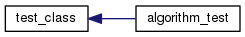

CSCE 221-200
Programing Assignment 3
Overview
MySTL
Testing
Todos
Bonuses
Class Hierarchy
Go to the textual class hierarchy

PMPL is a project of Texas A&M University
Generated on Mon Mar 14 2016 11:31:57 for MySTL by
1.8.10
 1.8.10
1.8.10